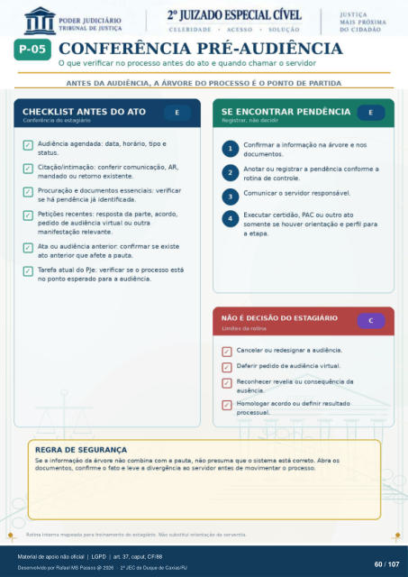

Transcrição automática em português, ainda não revisada. Confira grafia, prazos e termos jurídicos na imagem e no PDF antes de utilizar.
CONFERÊNCIA PRÉ-AUDIÊNCIA
O que verificar no processo antes do ato e quando chamar o servidor
ANTES DA AUDIÊNCIA, A ÁRVORE DO PROCESSO É O PONTO DE PARTIDA
CHECKLIST ANTES DO ATO
Conferência do estagiário Audiência agendada: data, horário, tipo e
status. Citação/intimação: conferir comunicação, AR,
mandado ou retorno existente. Procuração e documentos essenciais: verificar
se há pendência já identificada. Petições recentes: da parte, acordo,
pedido de audiência virtual ou outra manifestação relevante.
Ata ou audiência anterior: confirmar se existe ato anterior que afete a pauta.
Tarefa atual do PJe: verificar se o processo está no ponto esperado para a audiência.
REGRA DE SEGURANÇA
SE ENCONTRAR PENDÊNCIA
Registrar. não Confirmar a informação na árvore e nos
documentos. Anotar ou registrar a pendência conforme a
rotina de controle. Comunicar o servidor responsável.
Executar certidão, PAC ou outro ato somente se houver orientação e perfil para
a etapa.
NÃO É DECISÃO DO ESTAGIÁRIO
Limites da rotina Cancelar ou redesignar a audiência.
Deferir pedido de audiência virtual. Reconhecer revelia ou consequência da
a usêncla. Homologar acordo ou definir resultado
processual. Se a informaçáo da árvore nao combina com a pauta, nao presuma que o sistema está correto. Abra os
documentos, confirme 0 fato e leve a divergência ao servidor de movimentar 0 processo. Rotina interna mapeada para treinamento do estagiário. Não substitui orientação da serventia.
Ver também o infográfico original (página 60)
